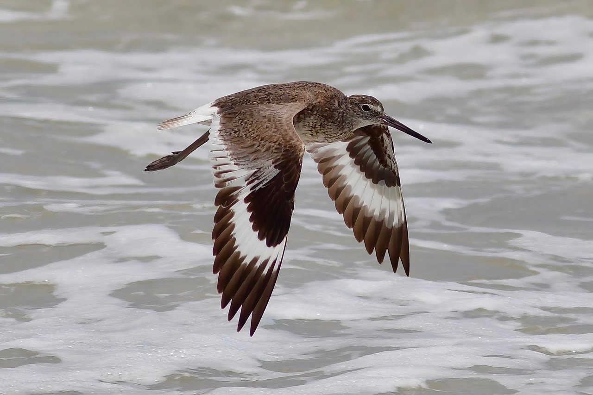

El Ciclo de la Vida, Rediseñado.
De un modelo lineal de "usar y tirar" a un sistema regenerativo que imita los ciclos naturales.

🔁 Economía Circular: Reducir, Reutilizar, Regenerar
La economía circular es una filosofía de diseño que busca eliminar el concepto de residuo desde el inicio. Los productos y materiales están diseñados para ser mantenidos en su máximo valor y utilidad en todo momento.
Para profundizar en sus principios, beneficios y modelos de negocio:
Explora la Teoría Circular Completa🌿 Armonía con la Naturaleza: El Modelo Perfecto
La naturaleza no produce basura; cada "residuo" es un nutriente para otro organismo. Adoptar la economía circular significa aprender de los **ecosistemas naturales**, donde los flujos de materiales son cíclicos.
"Restaurar y preservar los sistemas naturales es el núcleo de un futuro sostenible."
Próximamente, una página dedicada a la **Biodiversidad y los Servicios Ecosistémicos**.
🚀 Nuestra Acción: El Camino Hacia BioCiclo
Estamos implementando soluciones que cierran el ciclo de los materiales en la industria. Conoce nuestros **proyectos, métricas de impacto** y cómo las empresas y comunidades pueden unirse a esta transición.
Descubre Nuestros Proyectos y Colabora